１４日目(9/17)～デンプスターハイウェイとツンドラ～
toTombstoneTerritorialPark
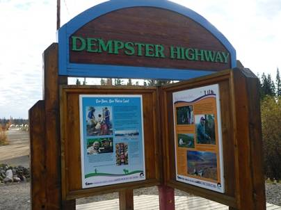
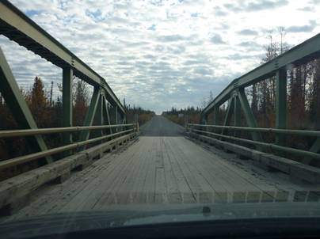
ドーソンシティからホワイトホース方面に車で20分ほど戻ったところに、さらに北へ伸びるデンプスターハイウェイとの分岐がある。このデンプスターハイウェイは、全長700kmを越える、カナダ最北端の道路だ。終点は、北極海に面しているイヌーヴィクの町。北緯70度に近い、北極圏内だ。当初の旅の最終目的地はこのイヌーヴィクであったが、ここまで何度か予定を変更していたのと、距離的にしんどくなったため、終点までは行かず、途中のトゥームストーン準州立公園まで行って帰ってこようという計画にした。今日の目的地はそのトゥームストーン準州立公園であり、デンプスターハイウェイの入り口から距離にして100km強だ。分岐を少し行った、下が木でできている橋がデンプスターハイウェイの入り口だ。
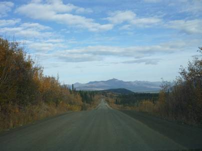
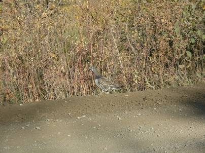
入り口から数分も走れば道路の舗装はなくなり、未舗装区間が始まる。この未舗装は終点まで続いているそうだ。そして、イヌーヴィク手前ではピール川とマッケンジー川を夏季は無料のフェリーで渡ることになるらしい。そして冬季は、完全に川が凍結するので川の上のアイスロードを車で走ることが可能だ。前回訪れたときは、イエローナイフ手前でマッケンジー川のアイスロードを通過した。走行中、何羽かライチョウを見つけた。時速100km近くで走っているので、見つけたらすぐに減速しなければ誤ってひいてしまう可能性がある。ライチョウたちは警戒心がほとんどなく、近寄ってもまったく逃げない。夏の日本アルプスでたまに見かけるような、草木にまぎれる保護色をしていた。これも、前回冬季に訪れたときは綺麗な真っ白だった。
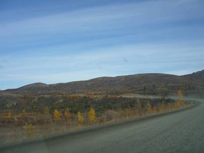
しばらく北上を続けると草木もまばらなツンドラ地帯となる。8月の下旬から9月の上旬にかけて、ごくわずかな期間、このあたりの地面は黄金色や赤に染まる。世界でもツンドラ地帯でしか見ることのできない、ツンドラ紅葉と呼ばれるものだ。これを期待していたが、残念ながら今回は数日来るのが遅かったようで、紅葉のピークは過ぎ、所々黄色や赤は見えられたが全体的には茶褐色になっているように見えた。
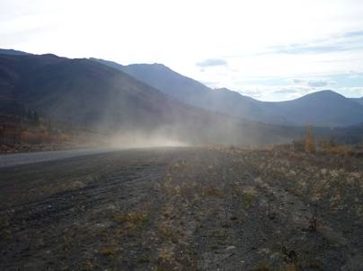
かなり乾燥しているので、ごくたまーにすれ違うトラックはもうもうと砂煙を巻き上げていた。
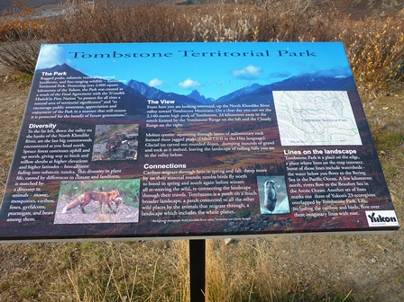
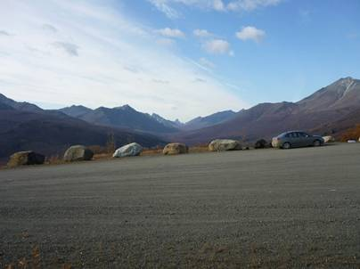
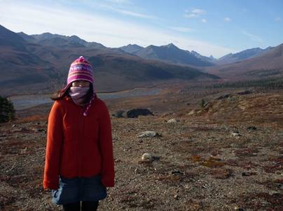
トゥームストーン準州立公園。そこは、樹木は生育できず、コケなどの地衣類、動物ではカリブーやジャコウウシ、レミングをはじめ極寒の地に究極的な適応を遂げた、ごくわずかな生き物しか住むことを許されない、まさに地球の辺境といえるような場所だった。ここから数百キロ北上すればもうそこは北極圏。すなわち、夏は太陽が沈まない白夜、逆に冬は太陽が昇ることの無い極夜が見られる地域になる。
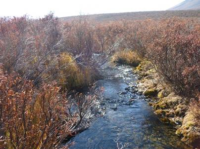
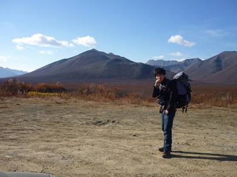
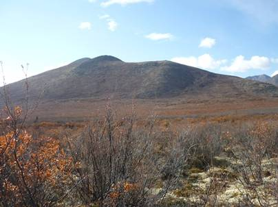
このような景色を前にすると、少しでも近づきたくなってしまう。ザックを背負い、奥の山の頂を目指すことにした。山の名前など知らない。そこに山があれば登ってみたくなるのがワンゲラーの本能。地面はぬかるみ、小川がところどころに流れている。ここは、カナダ最大のクマの生息地ということなので注意せねばならない。しばらく歩いたが、いっこうに山が近づいてこず、時間の関係もあり頂はあきらめることにした。なんとも情けない･･･。
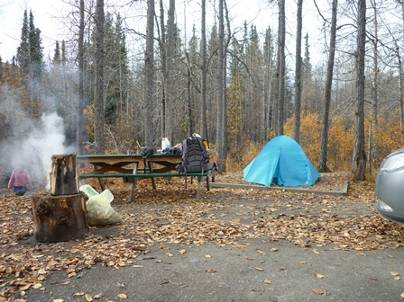
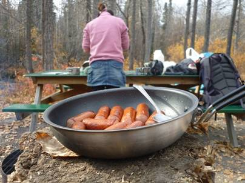
公園内にある無人のキャンプ場でサイトすることにした。かなり寒いので段を取るためあたりに落ちている木や落ち葉を集めて焚き火をし、食当開始。
今日のメニューはホワイトホースのスーパーで購入した食材を使ったカレーライスだ。懐かしい日本の味のカレーライスは絶品！
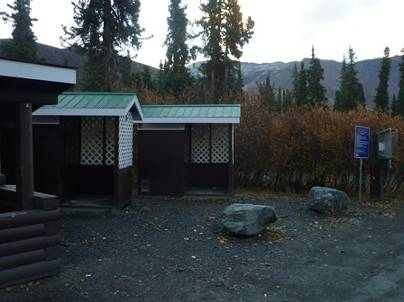
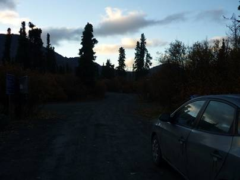
無人とは言ってもトイレは整備され、集金用の箱まであった。ちゃんとお金を払い、登録も済ませた。夏でも寒いこの土地にキャンプ場を整備してくれるとは本当にありがたい。僕たちの他にお客さんは一組しかいなかった。太陽はなかなか沈まず、22時を過ぎてようやくこの土地に夜が訪れた。